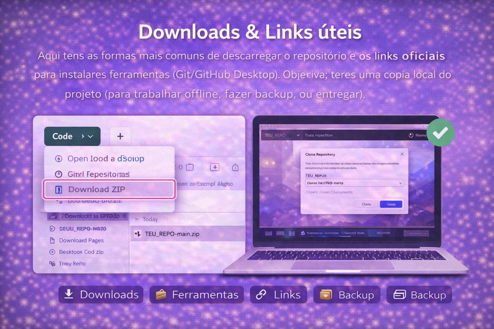
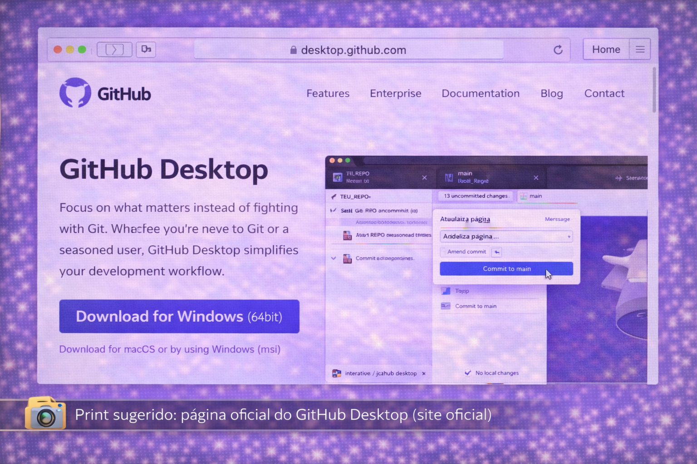
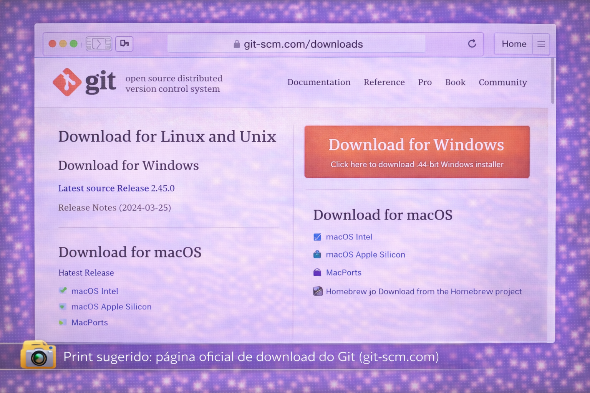
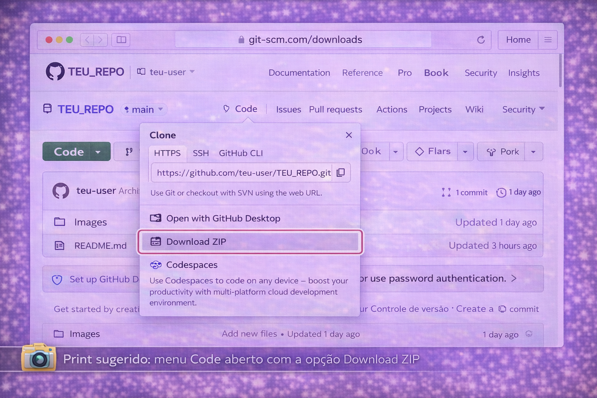
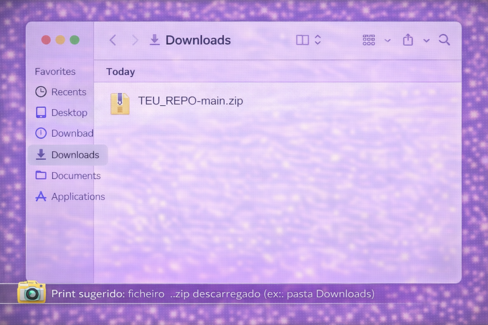
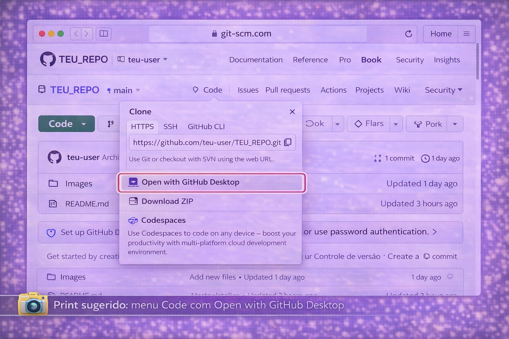
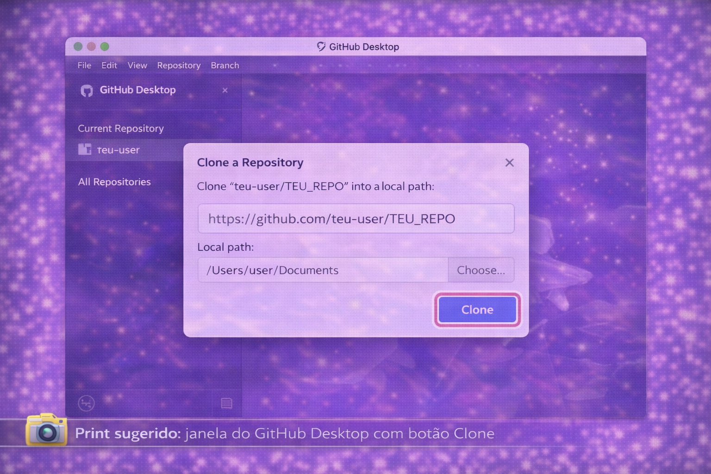
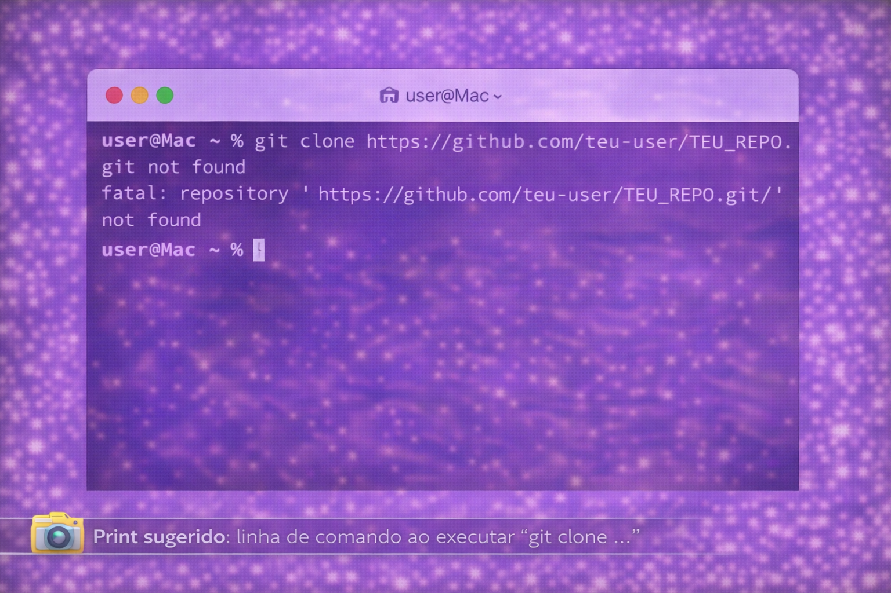

Downloads & Links úteis
Aqui tens as formas mais comuns de descarregar o repositório e os
links oficiais para instalares ferramentas (Git/GitHub Desktop).
Objetivo: teres uma cópia local do projeto (para trabalhar offline, fazer backup, ou entregar).
⬇️ Downloads
🧰 Ferramentas
🔗 Links
🗃️ Backup
Imagem (opcional) para esta página — coloca em images/

Quando usar cada opção?
Escolhe a forma certa conforme o que precisas fazer.
Download ZIP
Cópia rápida (sem histórico Git).
Rápido
- Bom para backup/entrega rápida.
- Não permite “push/pull” diretamente.
- Sem histórico de commits (é só ficheiros).
GitHub Desktop (Clone)
Para trabalhar com sincronização.
Recomendado
- Permite commit, push, pull e branches.
- Mais fácil do que terminal para iniciantes.
- Ótimo para trabalho contínuo.
Boa prática: para uma PAP, usa GitHub Desktop para trabalhar e usa
ZIP só como “backup extra”.
Links oficiais
Usa sempre fontes oficiais (segurança + versões corretas).
📸 Print sugerido: página oficial do GitHub Desktop (site oficial)

📸 Print sugerido: página oficial de download do Git (git-scm.com)

Descarregar o repositório
Duas formas: ZIP (rápido) ou Clone (para trabalhar “a sério”).
Ideal para: cópia rápida / backup / enviar a alguém.
Depois de descarregar, descompacta e abre a pasta.
📸 Print sugerido: menu Code aberto com a opção Download ZIP
 Download ZIP (substituir)">
📸 Print sugerido: ficheiro .zip descarregado (ex.: pasta Downloads)

Recomendado para trabalho contínuo (push/pull, commits e branches).
📸 Print sugerido: menu Code com Open with GitHub Desktop

📸 Print sugerido: janela do GitHub Desktop com botão Clone

Opcional: clonar com Git no terminal
Se já usas terminal, isto é o “clássico”.
Comandos (exemplo)
# 1) Clonar o repositório
git clone https://github.com/TEU_USER/TEU_REPO.git
# 2) Entrar na pasta
cd TEU_REPO
# 3) Ver estado (opcional)
git status
Dica: se o projeto for para GitHub Pages, confirma que o index.html está na raiz (ou na pasta configurada).
Problemas comuns (e como resolver)
Quando algo “não abre” ou “não aparece”, quase sempre é caminho/nome.
- ZIP “não atualiza”: descarregaste um ZIP antigo — faz download novamente.
- Desktop não faz clone: confirma login e permissões (repo privado vs público).
- Ficheiros não aparecem: falta commit/push no repo.
- Maiúsculas/minúsculas: em paths, conta (ex.:
Images/ ≠ images/).
📸 Print sugerido: exemplo de menu Code + aviso “repository not found/permissions” (se aplicável)

📸 Print sugerido: exemplo de pasta local clonada com ficheiros visíveis
